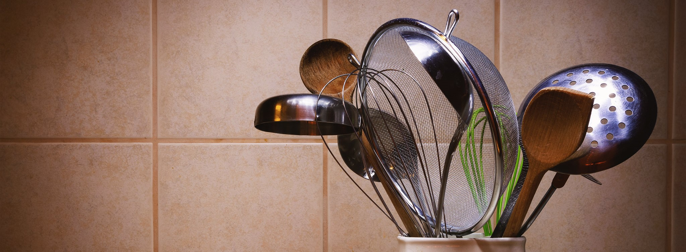

Low Carb Pizzarolle
| Menge | Zutat |
|---|---|
| 120 g | Quark |
| 3 | Ei(er) |
| 120 g | Käse, geriebener |
| 60 g | Käse, geriebener |
| n. B. | Tomatensauce |
| n. B. | Fleisch |
| n. B. | Gemüse |
| n. B. | Rucola |
Den Backofen auf 170 °C Ober-/Unterhitze vorheizen.
Für den Boden Quark, Eier und 120 g Käse in einer Schüssel miteinander verrühren und würzen. Die Masse auf das mit Backpapier ausgelegte Backblech kippen und glatt streichen. 15 Minuten im heißen Ofen backen.
Das Backblech herausnehmen und den Boden beliebig belegen mit z. B. Tomatensauce, Salami, Schinken, Zucchini, Champignons oder Mais. Mit 60 g Käse bestreuen und erneut in den Ofen schieben, bis der Käse eine schöne Farbe hat.
Abkühlen lassen, mit Rucola bestreuen und vorsichtig einrollen.
Eingerollt in Alufolie mehrere Tage im Kühlschrank haltbar.